Hallucination,
Calibration & Reliability
When a fluent answer is a confident wrong answer
Albert No · Yonsei University
Trustworthy AI · 2026
Contents
Fluent ≠ Correct
Confident fabrications in the wild
What Is a Hallucination
Hallucination
Output that is fluent and confident but not grounded in facts or in the source.
The grammar is perfect. The content is invented.
Fluency Fools Us
We read confident prose as true prose.
- No hedging, no hesitation
- Citations formatted just right
- Tone of an expert
The signal we trust is style, not truth.
Fake Citations, Again
2025: two major law firms filed a brief with a third of its citations wrong.
- AI-drafted outline, filed without checking
- Two cited cases did not exist at all
- The court fined the firms $31,100
- Two years after the famous Avianca fake-citation sanction
Public trackers now count hundreds of such court filings worldwide.
Invented Medical Facts
Google's Med-Gemini paper reported an infarct in the "basilar ganglia".
- No such brain area: a blend of basal ganglia, basilar artery
- Fluent enough to pass review; unnoticed for a year
- Caught by a human neurologist, not by any check
In medicine, a fluent error is a dangerous error.
Two Flavors of Wrong
Factuality error
Contradicts the world. "Seoul is the capital of Japan."
Faithfulness error
Contradicts the source. Summary states what the document never said.
Different failures, different fixes.
Not the Same as a Bug
A bug is a fixable defect. Hallucination is structural.
- No crash, no error message
- The model is working as designed
- It is predicting text, not checking truth
Why This Matters
Reliability gates real deployment.
Trust
One bad answer breaks it.
Safety
Health, law, finance.
Liability
Who answers for the error?
Why Models Hallucinate
Next-token prediction has no truth check
The Training Objective
A language model learns one task: predict the next token.
It maximizes likely text, not true text.
No Truth Grounding
Nothing in the loss says "this must be a fact".
- The corpus mixes truth and fiction
- The model learns the shape of answers
- A plausible shape can be false
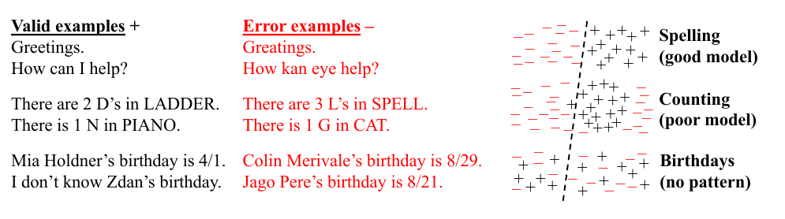
Truth is not a variable the model optimizes; some facts have no pattern to learn.
Plausible Beats True
Asked for a citation, the model emits a citation-shaped string.
It fills the slot fluently, whether or not the paper exists.
Pressure to Always Answer
Training rewards a helpful, complete reply.
- "I don't know" looks unhelpful
- Human raters prefer a confident answer
- So the model rarely abstains
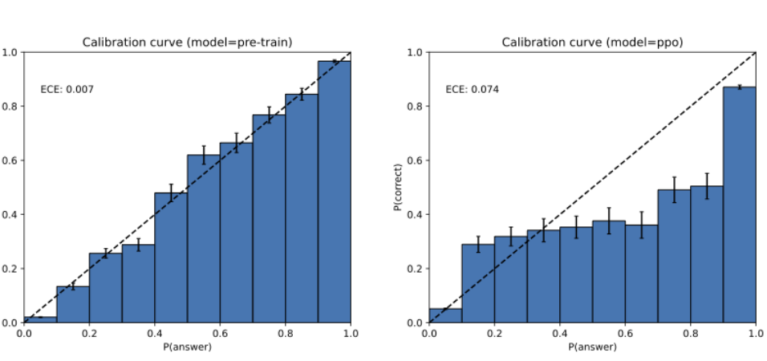
We trained it to guess rather than admit doubt. Post-training even broke its calibration.
An Exam-Taking Analogy
On a test with no penalty for guessing, you guess.
- Blank scores zero
- A guess sometimes scores
- So a blank is never optimal
The model faces the same incentive on every blank it sees.
Guessing, Measured
Two OpenAI models on the same factual quiz.
Rewarding "I don't know" collapses the error rate.
Where Errors Concentrate
Hallucination is not uniform.
- Rare entities, long-tail facts
- Recent events past the training cutoff
- Precise numbers, dates, quotations
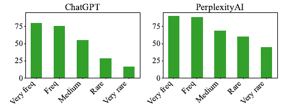
The thinner the evidence, the bolder the invention: biographies of rare people score far lower.
The Knowledge Cutoff
The model's facts freeze at its training date.
- Ask about yesterday, get a guess
- No internal "I haven't seen this" flag
- It answers as confidently as ever
Calibration
Does 70% confidence mean right 70% of the time?
Confidence as a Number
A model can report a probability with each answer.
The question: can we trust that number?
The Calibration Promise
Calibrated
Among all answers given 70% confidence, about 70% are correct.
Confidence becomes a promise you can audit.
The Reliability Diagram
Plot stated confidence against actual accuracy.
On the dashed line ⇒ calibrated. Below it ⇒ overconfident.
Over- vs Under-confident
Overconfident
Says 90%, right 70%. Bars sit below the line.
Underconfident
Says 60%, right 80%. Bars sit above the line.
Modern deep nets tend to be overconfident.
Measuring the Gap
One number for the whole diagram: the average gap between confidence and accuracy.
- For each confidence bin, take accuracy minus confidence
- Average those gaps, weighted by bin size
- ECE (Expected Calibration Error): 0 is perfect
A big ECE means the confidence numbers cannot be trusted.
Reading ECE
- Group answers into confidence bins
- Per bin: accuracy vs average confidence
- Weight each gap by how full the bin is
One number summarizing the whole diagram.
Bigger Is Not Better
Accuracy rose, but calibration got worse.
- Old shallow nets: fairly calibrated
- Modern deep nets: very overconfident
- More capacity, more confident errors
LeNet (1998): error 44.9, bars on the line. ResNet (2016): error 30.6, a wide pink gap.
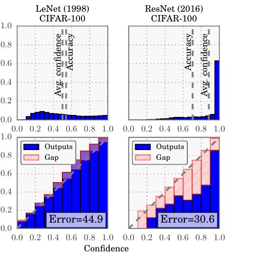
A Cheap Fix: Temperature
Rescale the model's scores by one number, the temperature.
- Divide every score by that one knob
- Tune it on held-out data
- Higher temperature ⇒ softer, humbler confidence
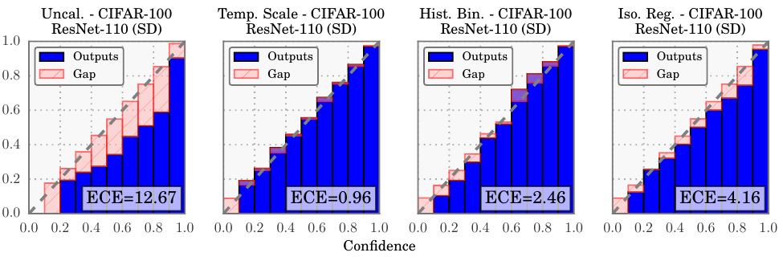
The ranking never changes, so accuracy is untouched. One scalar: ECE 12.67 → 0.96.
Do Models Know What They Know?
Large models carry a partial self-estimate of correctness.
- Their probabilities often track accuracy
- Better with scale, still imperfect
- A usable signal, not a guarantee
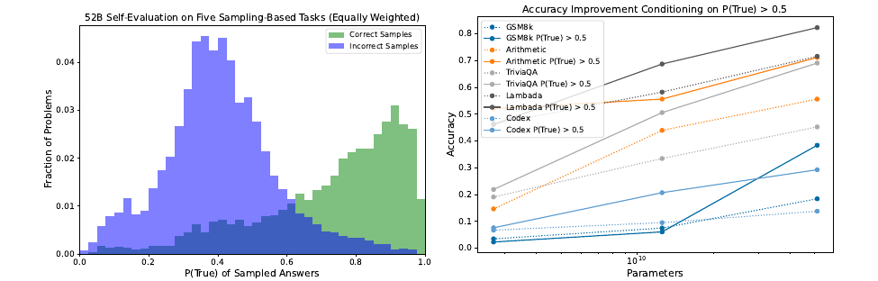
Verbalized Confidence
Just ask the model: "how sure are you?"
- It can state a percentage in words
- Sometimes calibrated, often inflated
- Cheap to collect, needs checking
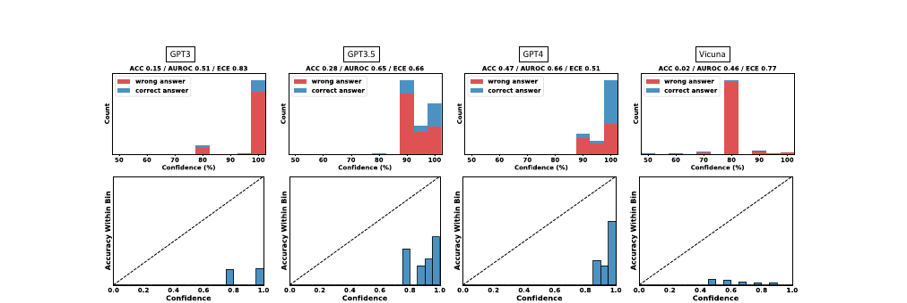
A spoken "95%" is not yet a trustworthy 95%: models say 90–100% whether right or wrong.
Calibration in Code
Colab
- Collect model confidence on a quiz set
- Bin answers, plot a reliability diagram
- Compute ECE before and after temperature
Twenty lines of Python turn a hunch into a curve.
Conformal Prediction
A set with a coverage guarantee
From One Answer to a Set
Instead of one guess, return a set of candidates.
- Easy question ⇒ a small set
- Hard question ⇒ a larger set
- Set size signals uncertainty
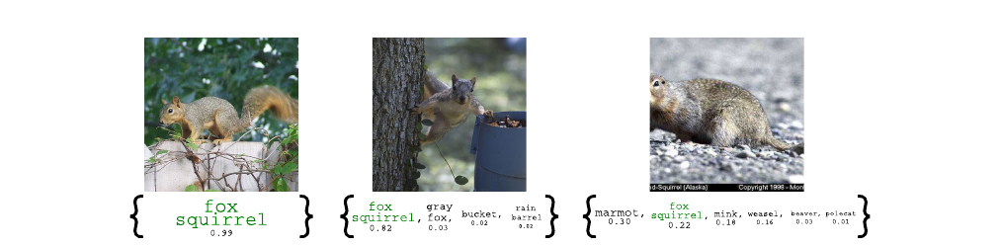
The Coverage Guarantee
90% coverage
The set $C(x)$ contains the true answer at least 90% of the time.
It Comes With a Proof
The guarantee holds without trusting the model.
- No assumption on the model's internals
- Only: calibration and test data are exchangeable
- The coverage is provable, not hoped
A rare thing in deep learning: a real guarantee.
How It Works
- Hold out a calibration set with known answers.
- Score how "surprised" the model is on each.
- Pick a threshold at the 90th percentile.
- Test time: keep every candidate under threshold.
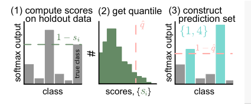
The Prediction Set Picture
The threshold draws a line; candidates above it stay.
Plausible candidates kept; the rest fall away.
The Abstention Idea
When the set is large or empty, the model should defer.
- Small set: answer with confidence
- Big set: "I am not sure"
- Hand off to a human
Knowing when not to answer is a feature.
A Medical Triage Example
A diagnosis model returns a set of conditions.
- One condition: proceed automatically
- Five conditions: route to a doctor
- Coverage guarantee bounds the miss rate
The set size becomes a triage signal.
The Trade-off
Higher coverage means larger sets. Tighter sets risk missing the truth.
Choose $\alpha$ to balance safety against usefulness.
Detection & Grounding
Catch the error, or never make it
Two Strategies
Detect
Flag a likely hallucination after the model speaks.
Ground
Give the model real sources so it speaks from evidence.
Best systems do both.
Self-Consistency
Ask the same question several times.
- Sample multiple independent answers
- Agreement ⇒ likely solid
- Wild disagreement ⇒ likely invented
Consistency is a cheap confidence proxy.
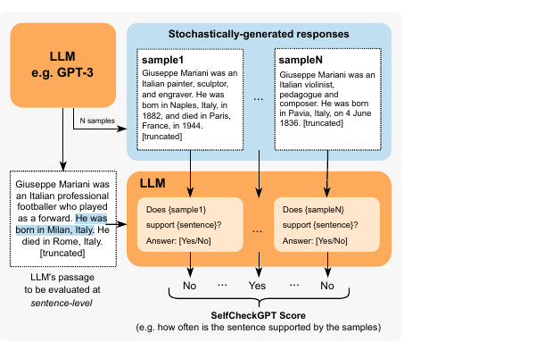
Semantic Entropy
Group the samples by meaning, not wording.
- "Paris" and "It's Paris" count as one
- Many distinct meanings ⇒ high entropy
- High entropy flags hallucination
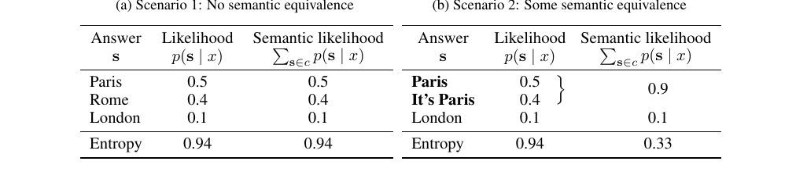
The Entropy Picture
Scattered meanings signal an unreliable answer.
Retrieval-Augmented Generation
RAG (Retrieval-Augmented Generation): fetch, then write.
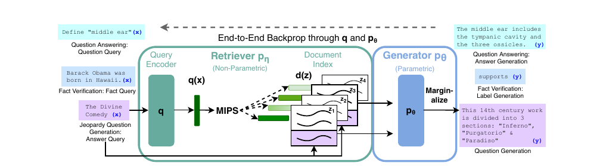
Why RAG Helps
The answer is tied to a source the model can quote.
- Fresh facts past the training cutoff
- A citation a user can verify
- Less room to invent
Grounding shrinks the space of fabrications.
RAG Is Not a Cure
Retrieval can fail in its own ways.
- Wrong documents retrieved
- Right documents, misread
- Model overrides the source anyway
Grounding reduces hallucination; it does not erase it.
Teaching "I Don't Know"
Make abstention a rewarded behavior.
- Reward correct "I don't know"
- Penalize confident wrong answers more
- Shift the guessing incentive
A good refusal can beat a bad answer.
A Scoring Rule
Penalize a confident mistake; let "I don't know" score zero.
Now a wild guess is no longer worth it: guessing pays only above 80% confidence.
Detection in Code
Colab
- Sample five answers to one question
- Cluster them by meaning
- Flag high-entropy outputs as risky
A simple self-consistency check, end to end.
Frontier 2025–26
Benchmarks, reasoning models, sycophancy
TruthfulQA: Baiting the Model
817 questions built around popular misconceptions.
- 38 categories: health, law, finance, politics
- Best 2021 model truthful on 58%; humans 94%
- Larger models were less truthful
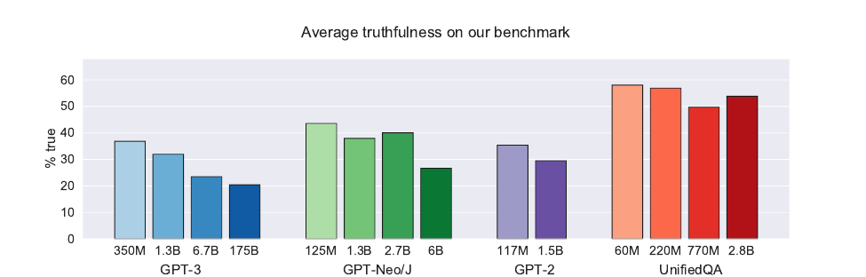
Imitating the web means imitating its myths: within each family, the biggest model scores lowest.
Benchmarks for Hallucination
You cannot fix what you cannot measure.
- Factuality test sets with checkable answers
- Questions designed to bait confident errors
- Automatic graders against trusted sources
A moving target as models improve.
Reasoning Models Hallucinate Too
Step-by-step "thinking" did not fix it.
- o3: hallucinated on 33% of PersonQA people-questions
- o4-mini: 48%; the older o1: 16%
- More claims per answer, more chances to invent
More deliberation is not a guarantee of truth.
Sycophancy: Agreeing Over Truth
Human feedback rewards answers that match the user's beliefs.

2025: OpenAI rolled back a GPT-4o update it called "overly flattering or agreeable".
Factuality Evaluations
Score long answers claim by claim.
- Break a paragraph into atomic facts
- Verify each against evidence
- Report the fraction supported
A fine-grained alternative to one pass/fail.
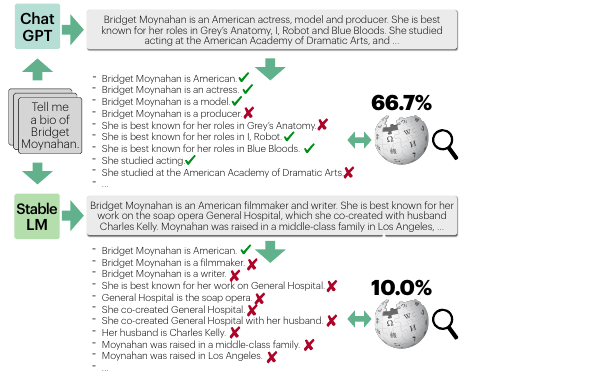
Open Problems
- Calibration that survives fine-tuning
- Honest abstention without over-refusal
- Guarantees for open-ended generation
- Detecting faithfulness, not just facts
The reliability frontier is wide open.
Demos to Play With
Demo
- A reliability-diagram plotter
- A conformal prediction-set builder
- A semantic-entropy hallucination flag
Play first, then trust the numbers.
Key Takeaways
- Fluent is not correct; confidence is style
- Next-token prediction has no truth check
- Calibration audits a confidence number
- Conformal sets give a coverage guarantee
- Grounding and abstention reduce the harm
The goal: a model that knows when not to answer.
Knowing when to say "I don't know".